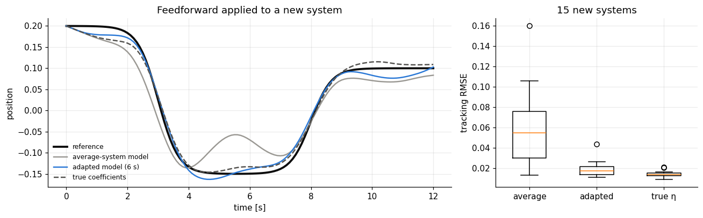

import numpy as np
import matplotlib.pyplot as plt
import dynutils
from dynutils import sample_system, simulate, multisine, predict, adapt, design_score, rmse
dynutils.set_style()
rng = np.random.default_rng(dynutils.SEED)
COLOR = dynutils.COLOR
family, train_systems, train_data, train_fits = dynutils.build_family(rng)T_ctrl = 120
tc = dynutils.DT * np.arange(T_ctrl + 1)
ref = 0.2 - 0.35 * (1 / (1 + np.exp(-(tc - 3) * 3))) + 0.25 * (1 / (1 + np.exp(-(tc - 8) * 3)))
def feedforward(eta, lam=0.05, eps=1e-5):
return dynutils.feedforward(eta, ref, lam=lam, eps=eps)2. Tracking a new system
pool = np.array([multisine(60, rng) for _ in range(200)])
u_design = pool[np.argmax(design_score(family, pool))]
ctrl_err = {m: [] for m in ("none", "context", "reference")}
ctrl_example = {}
for n in range(15):
s = sample_system(rng)
z_, _, _ = adapt(family, simulate(s, u_design, rng)[1], u_design)
for m, eta in (("none", family.mean), ("context", family.decode(z_)), ("reference", s["eta"])):
q_ctrl, _ = simulate(s, feedforward(eta), rng)
ctrl_err[m].append(rmse(q_ctrl, ref))
if n == 0:
ctrl_example[m] = q_ctrl
fig, (ax1, ax2) = plt.subplots(1, 2, figsize=(12, 3.8), gridspec_kw=dict(width_ratios=[2, 1]))
ax1.plot(tc, ref, color=COLOR["truth"], lw=2.5, label="reference")
lab = dict(none="average-system model", context="adapted model (6 s)", reference="true coefficients")
for m, q_ctrl in ctrl_example.items():
ax1.plot(tc, q_ctrl, "--" if m == "reference" else "-", color=COLOR[m], lw=1.6, label=lab[m])
ax1.set(xlabel="time [s]", ylabel="position", title="Feedforward applied to a new system"); ax1.legend(fontsize=8)
ax2.boxplot([ctrl_err[m] for m in ctrl_err], tick_labels=["average", "adapted", "true η"], widths=0.5)
ax2.set(ylabel="tracking RMSE", title="15 new systems")
plt.tight_layout(); plt.show()
for m in ctrl_err:
print(f"{lab[m]:>22s}: mean tracking RMSE = {np.mean(ctrl_err[m]):.4f}")
average-system model: mean tracking RMSE = 0.0577
adapted model (6 s): mean tracking RMSE = 0.0191
true coefficients: mean tracking RMSE = 0.0140
Six seconds of well-chosen data, interpreted through the pretrained family, cut the tracking error by more than half compared with the average-system model, and match what the true coefficients achieve. The adapted model can even be marginally better, because it is fitted to the real behaviour and partly absorbs the unmodelled terms. The remaining error comes from the disturbance, which only feedback can reject. A feedback controller would reduce all errors, but the ordering, and the reason for it, would remain.
Exercises
Exercise 1: A random experiment instead of a designed one
Repeat the control comparison, but adapt the context from a random 6-second experiment
(multisine(60, rng)) instead of the D-optimal u_design. Does the "context" tracking error move
noticeably closer to "average" or stay close to "true η"?
Solution
ctrl_err_random = []
for n in range(15):
s = sample_system(rng)
u_random = multisine(60, rng)
z_, _, _ = adapt(family, simulate(s, u_random, rng)[1], u_random)
q_ctrl, _ = simulate(s, feedforward(family.decode(z_)), rng)
ctrl_err_random.append(rmse(q_ctrl, ref))
np.mean(ctrl_err_random), np.mean(ctrl_err["context"])
Consistent with chapter 06, the random experiment still gives a usable adapted model (context adaptation degrades gracefully), but its mean tracking error sits above the designed experiment's, closer to the midpoint between "average" and "true η" rather than matching "true η" outright.
Exercise 2: A heavier smoothness penalty
Recompute the feedforward input for the true-coefficient model with lam=0.5 instead of 0.05 (ten
times more smoothing). How does the resulting input and the tracking error change?
Solution
s = sample_system(rng)
u_smooth = feedforward(s["eta"], lam=0.5)
q_smooth, _ = simulate(s, u_smooth, rng)
rmse(q_smooth, ref)
A heavier smoothness penalty produces a gentler input that changes less from sample to sample, at
the cost of tracking the sharp step in the reference less closely: the feedforward optimisation
trades tracking accuracy for input smoothness exactly as lam dictates, independently of which
model supplied eta.